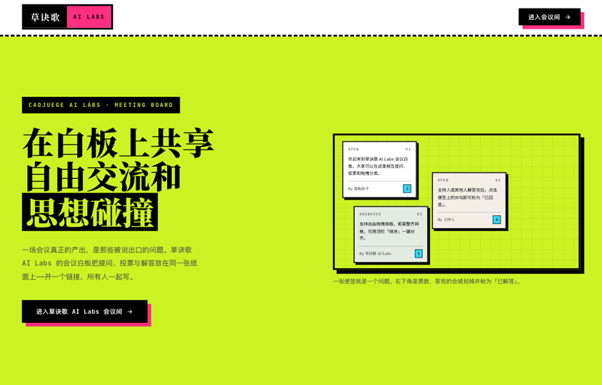
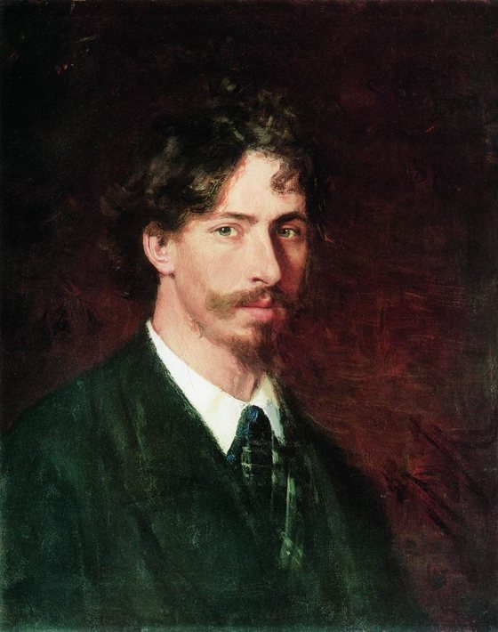
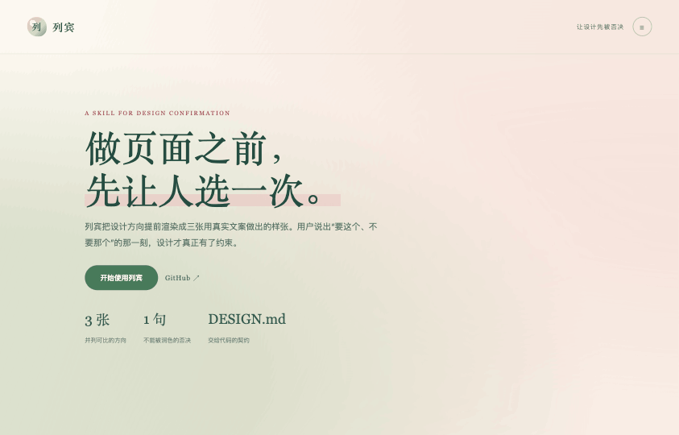
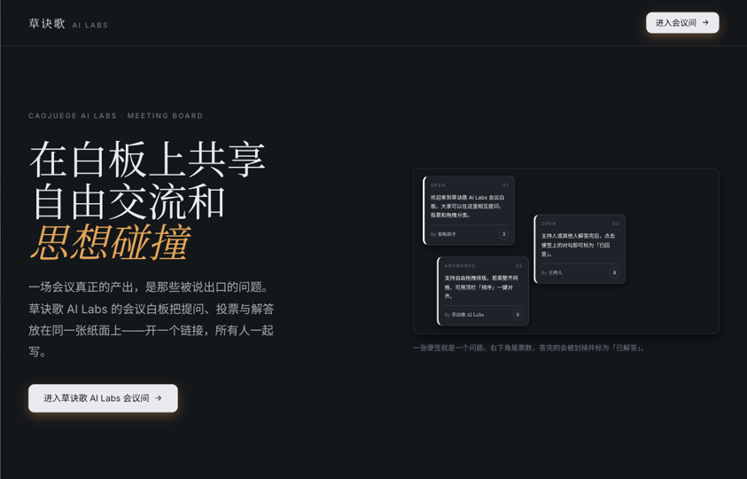

I照搬贴着参考

贴着参考走：结构、密度、节奏都照搬过来，先看看「就照这个做」到底合不合身。
good artists copy, great artists steal
「优秀的艺术家模仿，伟大的艺术家偷窃。」
把你想要的设计风格，先给出三个版本。你确定一版、吐槽另外两版哪里不好，它据此重新生成 DESIGN.md——你的 agent 拿着这份文件，去精准修改你的产品。

one axis, three answers —
下面这三张不是示意图，是这一页自己的确认现场：同一份真实文案，沿一条轴（照搬 → 取气 → 反手）分化成三版，各自完整。三版只差在这一条轴上——不是换个颜色。

贴着参考走：结构、密度、节奏都照搬过来，先看看「就照这个做」到底合不合身。

只取气质，不搬结构：参考里那点味道留下来，版面按你自己的内容重新组织。

故意反着来：参考怎么做，它偏不那么做。用来试出你的边界——你会在哪一刻说「这个不行」。
each direction also renders the core screen and the empty state — three screens apiece, one HTML file —
answer in your own words —
照搬 / 取气 / 反手，或者「三个都不要」。都不要也是一次有效判断。
请用原话：「照搬太满」「反手没说清它怎么用」。这句话会一字不改地进入设计契约。
他正在做什么、为什么此刻需要这个产品。场景定下来，密度和语气才有依据。
回答完这三句，它把你的原话逐字写进 DESIGN.md——包括你吐槽的那两版哪里不好。
one paste, that's it —
装一次，之后每次只做一件事：把参考和真实文案填进这张表，复制成一段话粘给你的 agent。参考图多的时候，改成下载 zip。
git clone https://github.com/ShaohuaDavidLee/Liebin.git ~/.claude/skills/liebin
读一下 liebin 的 SKILL.md，按它走一遍我贴在下面的任务包：先给我三版样张，别直接写代码。我选完之后，把我的原话写进 DESIGN.md。
重开一个 Claude Code 会话即可生效，或直接 /liebin 调用。Codex、Cursor、Grok、Openclaw、Kimi Work、WorkBuddy、Hermes、DeepSeek harness——把仓库放进项目里，让它读 SKILL.md 就行，不挑 agent。
拿到三版之后，选一版、说清另外两版哪里不要——它把你的原话写进 DESIGN.md。之后让任何会写代码的 agent 读这份文件去落地，列宾到这里就停。
the skill stops here, on purpose —
three ways this goes wrong —
参考里的 -2.46px 字距，是 80px 拉丁标题下的 -0.031em。照抄到 48px 中文标题上会挤成一团。所有间距一律转 em 再迁移，中文标题不用负字距。
单方案只能换来「嗯挺好的」或者「感觉不太对」，两种回答都零信息量。三个并列，才能拿到差异判断。
模型生成的负面约束永远是「保持一致性」「避免视觉噪音」这类正确的废话，对后续生成零约束力。Don'ts 这一段只能由人填。
asked more than once —
不会。列宾只管动笔前最关键那一步：给你三张可视化的样张，让你的 DESIGN.md 不再是盲盒。写代码是下一步的事——把这份文件交给 Claude Code、Codex 或任何会写代码的 agent 去落地。
你不需要说出自己要什么。你要做的只是指着三版说「要这个、不要那个」，再补一句哪里不像——它要的就是这个。
不挑 agent。Codex、Cursor、Grok、Openclaw、Kimi Work、WorkBuddy、Hermes、DeepSeek harness——把仓库放进项目里，让它读 SKILL.md 就行。
提取器满大街都是，提得再准也解决不了开头那个问题：你说不清哪里不对。列宾知道，你看到三版设计样稿之后，才知道自己想要什么。